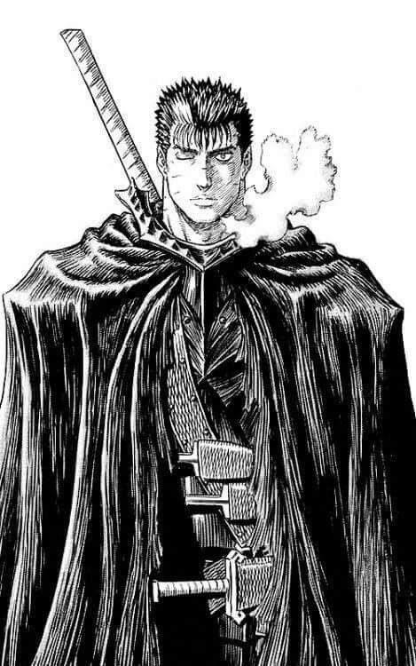
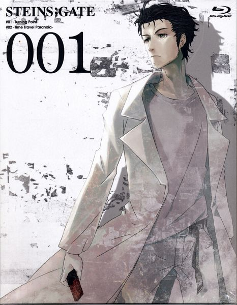
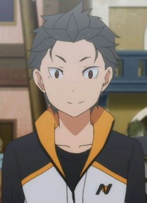

Numero 1: Guts
Anime: Berserk

(ガッツ Gattsu). Conocido por su epíteto del "espadachín negro" ("kuroi kenshi", "guerrero negro" en traducciones en español).
Es el protagonista del manga y anime Berserk siendo un antiguo mercenario marcado que viaja por el mundo en una lucha interna constante entre perseguir su venganza y proteger a sus seres queridos.
Numero 2: Okarin
Anime: Steins;Gate

Okabe (岡部倫太郁, Okabe Rintarō), alias Okarin (una contracción de Oka-, proveniente de su apellido, y Rin-, de su nombre).
Es un autoproclamado científico loco y el protagonista de Steins;Gate.
Numero 3: Subaru
Anime: Re:Zero kara Hajimeru Isekai Seikatsu

TSubaru Natsuki (ナツキ・スバル Natsuki Subaru?) Es un personaje ficticio de la franquicia Re:Zero kara Hajimeru Isekai Seikatsu.
La cual es una serie de novelas ligeras escritas por Tappei Nagatsuki e ilustradas por Shin'ichirō Ōtsuka.
Subaru es un joven hikikomori que de repente se ve transportado a otro mundo en su camino a casa desde la tienda de conveniencia.